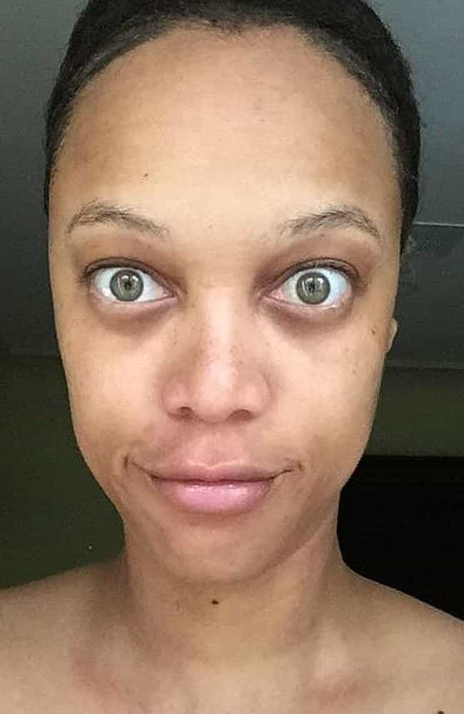

< < < Back
Obese Size 24 Woman Shows That Any Woman Can Be A Model – Return Of Kings
Tess Munster made many headlines at the start of this year for being the first size 24 “model” to be signed to a major agency (whatever that means). Calling herself a “body positivity ambassador” on her website, Munster conveniently forgets that there is nothing positive about otherwise avoidable heart disease, cancer, or other ailments grossly accelerated by obesity. And she additionally ignores how younger generations today and in the immediate future may be the first to predecease their parents in large numbers.
It speaks volumes about the oftentimes dystopian nature of this world that obese people like Tess Munster can proudly proclaim they never felt pressure to lose weight and then be paraded around as some sort of icon for female empowerment and a role model (pardon the pun) for others to follow.
Rather than simply accepting obesity, this actually promotes it as something to be pursued. So your BMI is 32, you’re obese but you just don’t want to exercise? Well, Tess Munster didn’t and she turned out “okay”!
What’s more is that Munster preaches “body positivity,” refusing to change her body, as she drastically alters her face at the same time. Is it really genuine to say you want to promote good body image by being obese but simultaneously reconfiguring your facial appearance by way of L’Oreal and Photoshop?
These are questions Munster and her tribes of followers and admirers either ignore or dance around.
What if someone didn’t feel pressure to quit drugs or stop large-scale drinking and was presented as a role model?
Mel Gibson has a borderline excuse, alcoholism, for his drinking. So would people glorify his unhealthy decision to keep drinking in large amounts? Unlikely.
I’d like to see an article where an alcoholic is championed as a hero for refusing to quit drinking, including in circumstances where they have some control over their consumption. Of course, I subscribe to the belief that alcoholism is a disease, though a frequently over-diagnosed one (like ADHD in young boys or clinical depression in many adults).
That said, alcoholics are not automatons. They can successfully resist their urges in many instances but choose not to. So can you imagine The Guardian and a host of other newspapers giving airtime to and glorifying a compulsive drinker’s lifestyle?
The situation is starker still for drug users. Though society does somewhat idealize the consumption of drugs (think of the legacy of Bob Marley, even if marijuana is not a hard drug), in no sense would major news outlets implicitly present the consumption of narcotics as a pursuit to be admired with all the fanfare they allocated to Tess Munster’s signing.
Hard drug users (typically) die young, as do many morbidly obese people, so what is the fundamental difference? The retort that drugs are illegal, whereas food is not, is hardly a response. Both have calamitous, comparable results in many cases: disease and death.
“I’m body positive about my ‘curvy’ body but I paint 15 layers of makeup on my face every morning”

If this is what non-obese supermodel Tyra Banks looks like without makeup, what would Tess Munster look like? And how can she be genuinely “body positive” if she proudly flaunts her figure but obscures her REAL face with cosmetics?
The klaxon of “body positive” amongst feminists and overweight or obese women reeks of hypocrisy. Whilst they parade the calorie-drowned female form as “beautiful” and in no need of changing, they simultaneously avert their eyes to the question of why these women douse themselves in so much cosmetics that their faces are substantially changed.
All this does is keep one half “real” (if you can call an entire body half of someone’s appearance) and change the other half to the point where it is decidedly unreal and nothing but a fantasy.
Body positivists, a term I do not think we should even be using (body denialists is better), want to have their cake and eat it, too. They will decry the misogynistic social pressures of women to conform to a particular body type but gleefully reinforce many of those pressures by plastering themselves with as much makeup as you would need paint to cover a new house, inside and out.
People may feel that I am against makeup. Far from it. The point is to identify how feminists and others hypocritically pillory expectations on women that they engage in perpetually themselves.
Delusions, delusions, delusions…
This is not Tess’ real face. It’s L’Oreal’s.
This piece is about common sense, not fat-shaming. On two counts, the promotion of obesity (not curviness!) and the irony of body positivity combined with the illusion of makeup, Tess Munster and her supporters have failed abysmally. In the midst of a truly shocking obesity crisis, the last thing society needs is the belief that obesity is somehow a healthy lifestyle.
Those who are overweight, especially the obese, do need help to change the course of their health. Denial, however, should not be considered as part of any strategy to combat this epidemic.
Read More: Dancing With The Obese In Australia